This part involved calibrating the camera and performing 3D scanning. Below are two screenshots showing the camera frustums visualization in Viser.
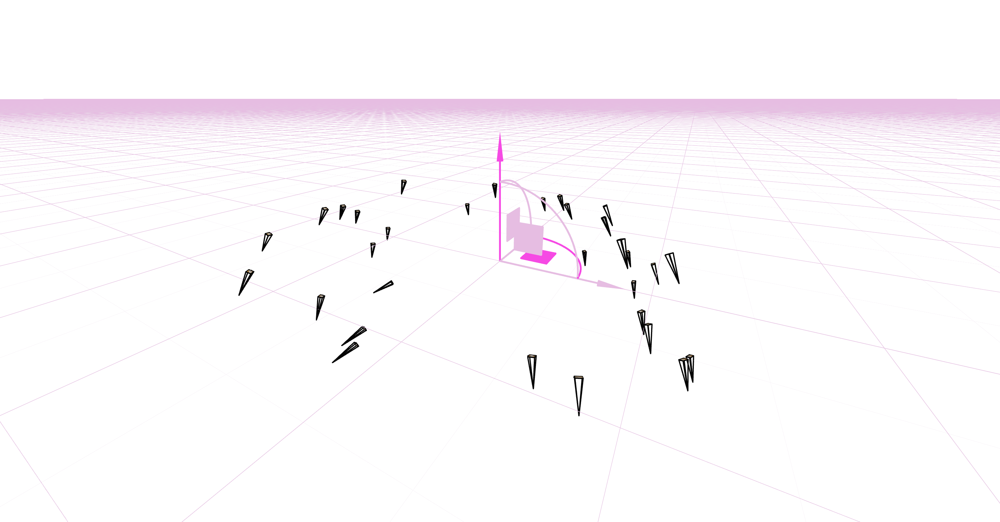
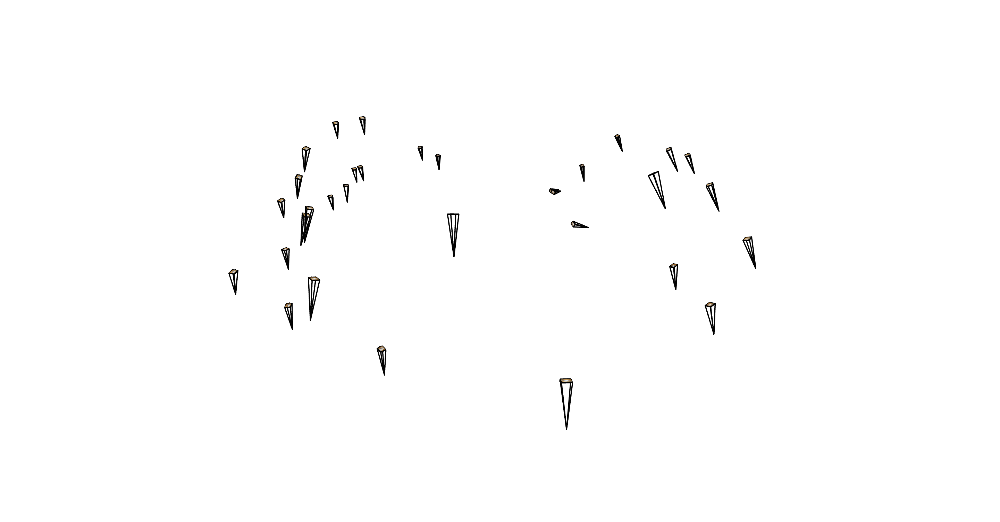
L=10 (resulting in 42-dimensional input), 8 hidden layers, 256 width, learning rate 1e-2, 3000 iterations for full training and 1000 iterations for parameter test.
The following visualizations show the training progression on the provided test image and one of my own images, demonstrating how the model learns to represent the image over time.
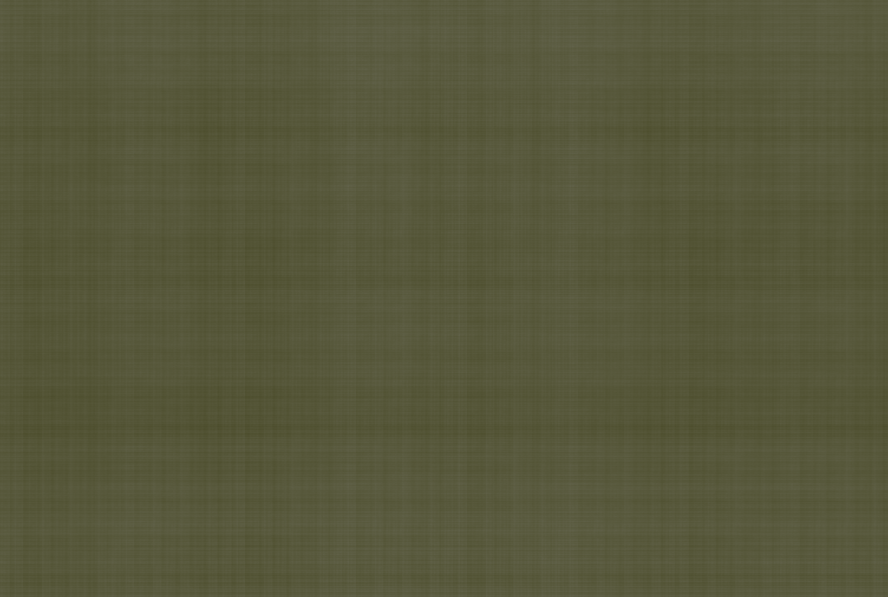
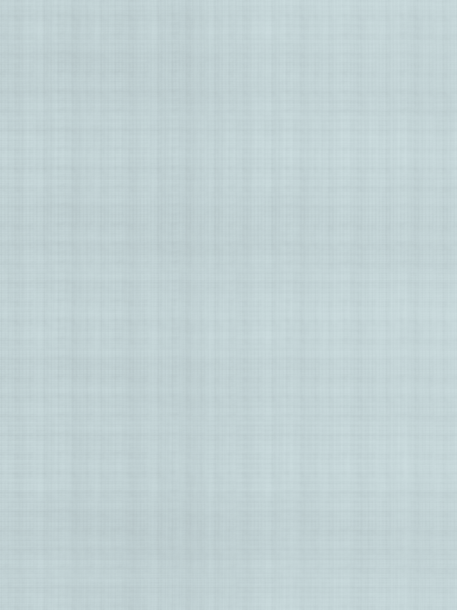
This 2x2 grid compares the final results based on two choices of max positional encoding frequency (L) and two choices of network width (W).
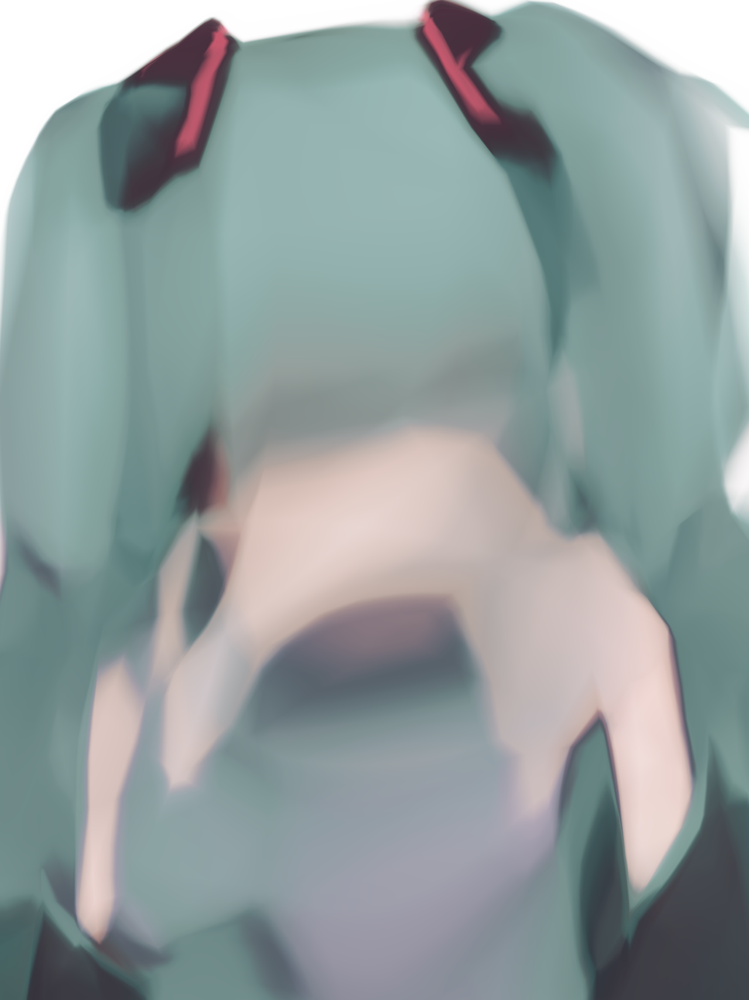
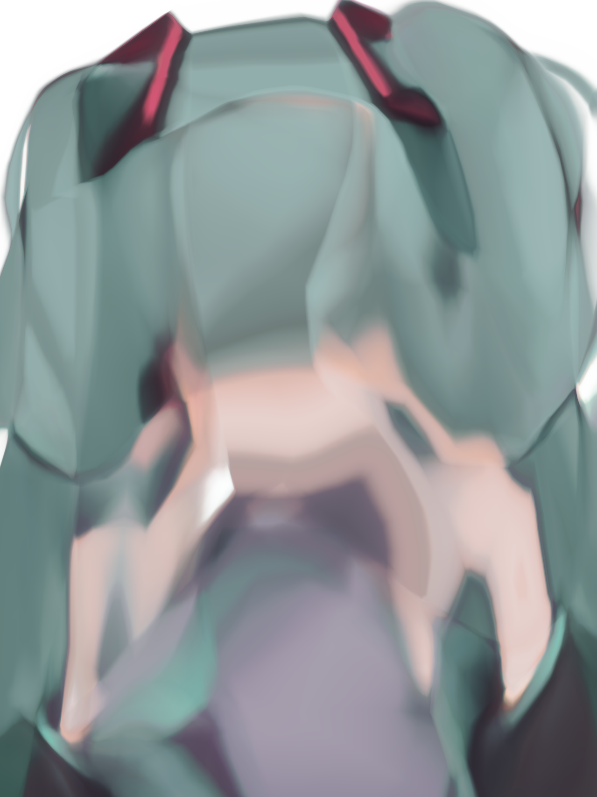
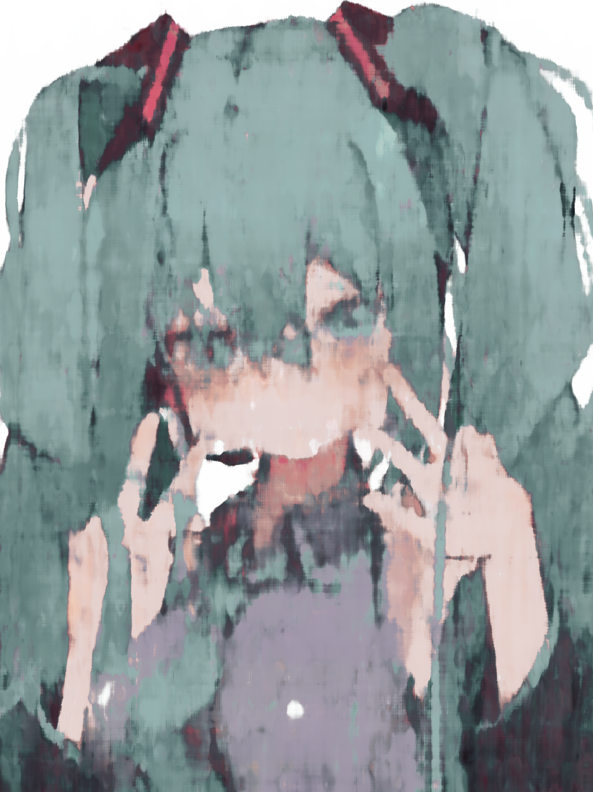
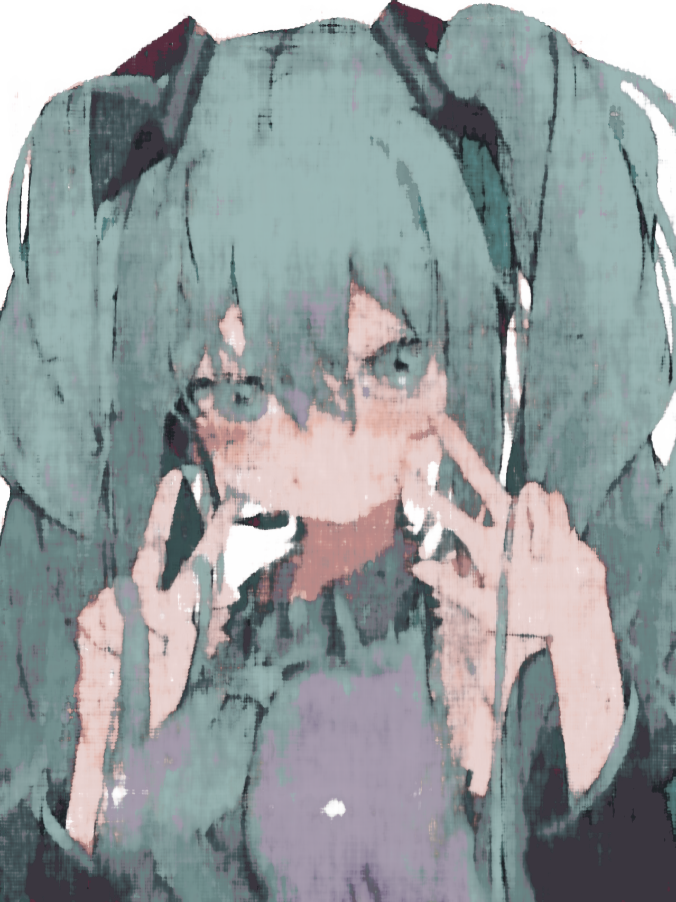
The PSNR curve below shows the training progress of my own image, illustrating the convergence of the model.
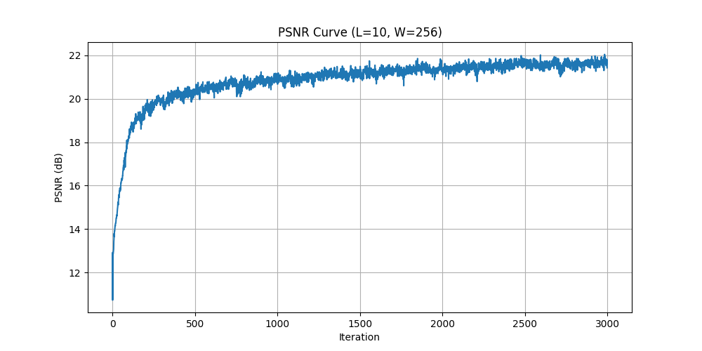
First, the script iterates through all training images, computes normalized ray directions by transforming pixel coordinates from camera space to world space, and uses the camera position as the ray origin. This process precomputes and stores all rays and their corresponding pixel colors for every image. During each training iteration, a batch_size of rays is randomly sampled from the ray pool. For each ray, n_samples 3D points are sampled between its near and far boundaries, with random perturbations added during training. These 3D points and ray directions are then fed into the NeRF model, which maps the 3D points x to high-dimensional features. The features of x pass through an 8-layer MLP backbone with skip connections, whose output h branches into two paths: one predicting density, the other predicting RGB colors. Finally, volumetric rendering is performed. It receives the model outputs sigmas and rgbs, calculates the opacity alpha, then computes the transmittance. The final pixel color for the ray is rendered by weighting and summing the transmittance and color components.
A visualization of the rays and samples (up to 100 rays) along with the camera positions.
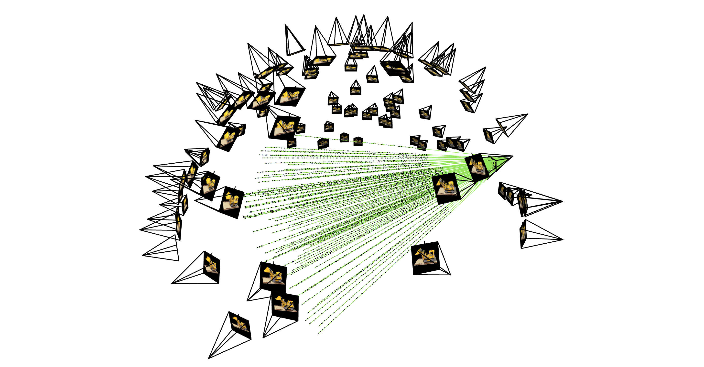
This animation shows the predicted images at different training iterations, illustrating the refinement of the NeRF model.
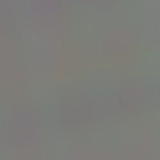
The PSNR curve on the validation set, showing model performance on unseen views during training.
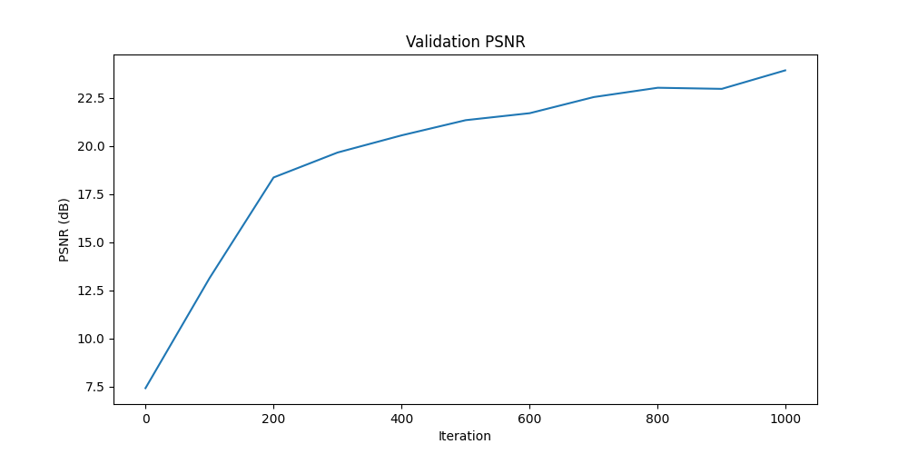
A spherical rendering video of the Lego scene, generated using the provided test cameras path.
The dataset I firstly created failed to generate usable GIF images during training because the photos were taken in low-light conditions without using paper calibration markers. Below is an image from the dataset alongside the failed GIF, serving as a counterexample of the shooting environment.
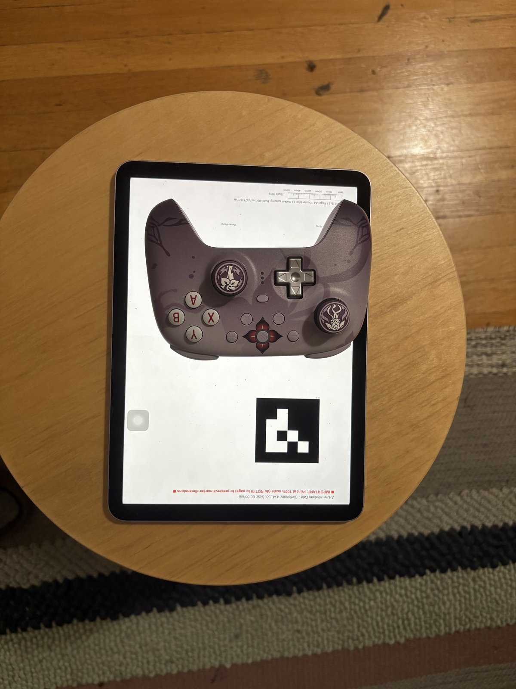
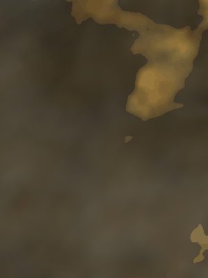
To ensure successful training, I re-captured the dataset in a better-lit environment and attempted to increase the number of sampling points while reducing the learning rate to capture more intricate details.
A plot showing the training loss curve over iterations for my own dataset.
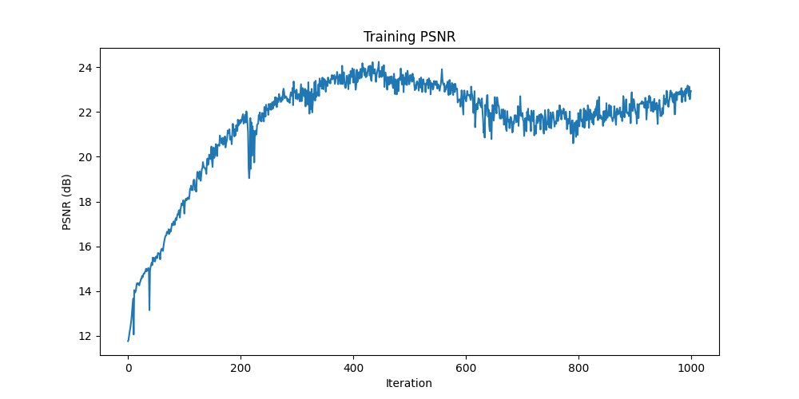
Intermediate renders of the scene at various stages during training.
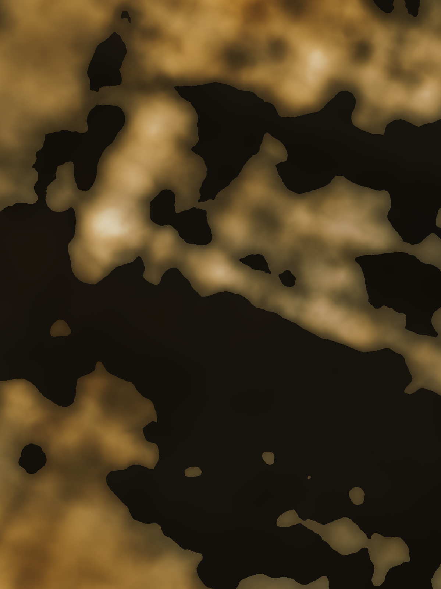
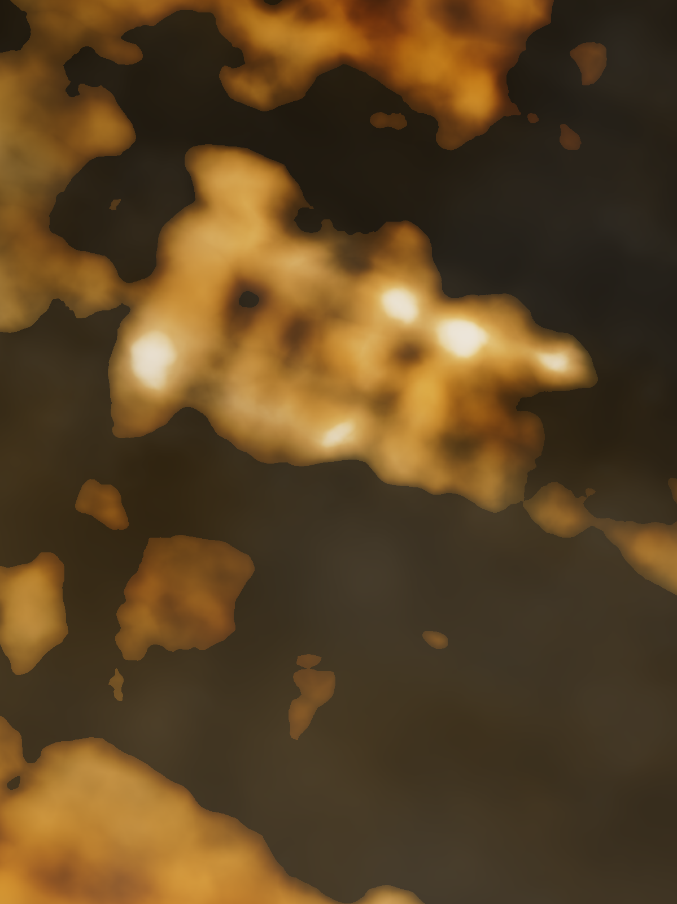